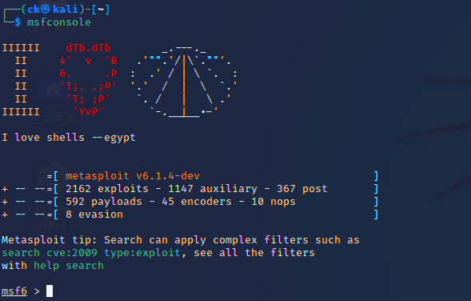
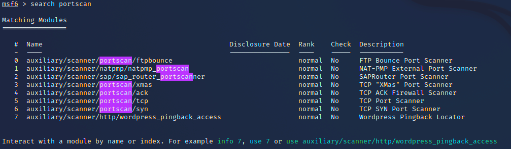
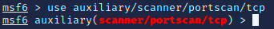
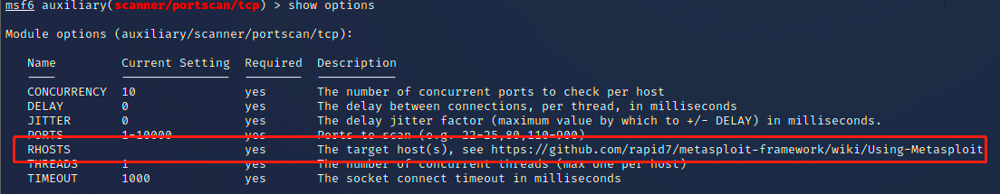

端口扫描
端口扫描是一种重要的主动信息获取方法, 通过端口扫描可以快速准确的得知目标服务器上运行的服务和对应程序版本, 从而为渗透提供入路
实验靶机:
Metasploitable2 ==> 192.168.48.134
实验实例:我们将用两种不同的方法来分别测试端口扫描的方法
msf内置的扫描器和nmap先来nmap
最普通的测试
nmap <ip>/<域名>
可以看出端口号, 状态, 服务三种信息
通过添加参数-sV就可以得到更细致的信息

可以看出多了一些数据, 由于需要测试的条目更加复杂, -sV选项通常要花费数分钟的时间, 每次敲击enter就可以观察扫描进度, 完成后会返回新的version信息还有server info信息
然后是msf
先通过指令
msfconsole来启动msf的交互式终端
search portscan查找一下端口扫描器
我们通常使用tcp扫描器, 所以就使用对应的模块(第五个搜索结果)
use auxiliary/scanner/portscan/tcp
shou options检查一下所需设置的参数
可以看到已经有很多参数都已经有默认值, 但仍有一行为空--RHOST(其解释为目标主机)将其设置成目标主机
运行
run
两次扫描结果有时会不一样, 所以使用不同的扫描器可以保证对目标主机的完整信息获取